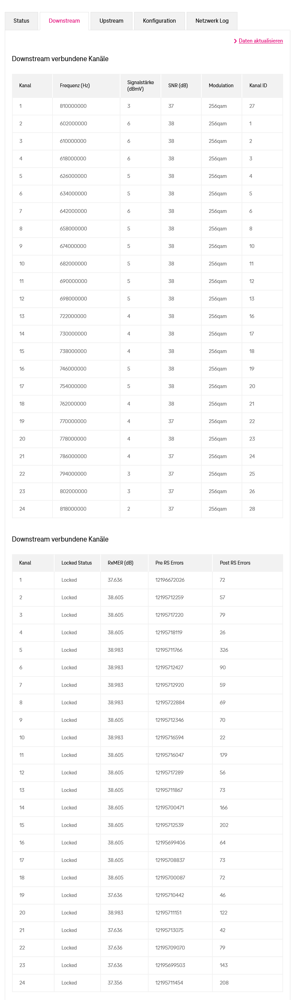
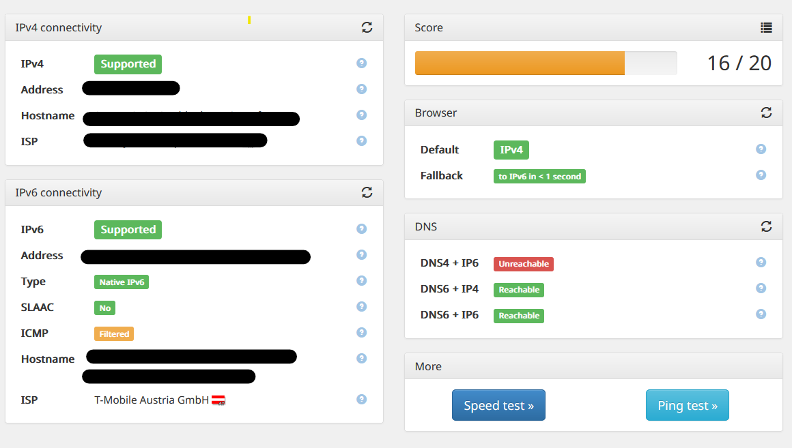
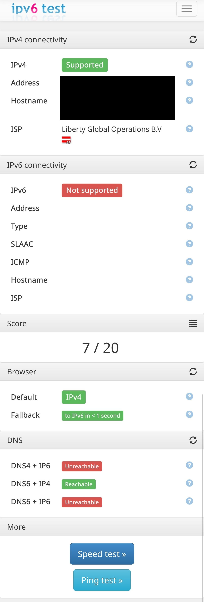
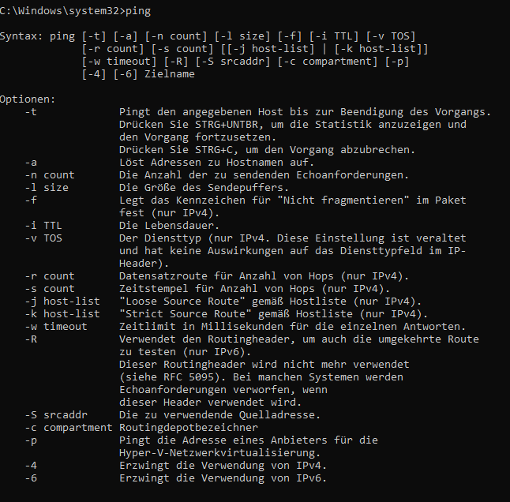

Liebe Community,
seit vielen Monaten habe ich das Problem, dass die Internet-Verbindung nicht stabil ist. Das ist mir zuerst am Handy aufgefallen (3 verschiedene Handys um genau zu sein). Es gab immer wieder Momente, wo Nachrichten auf WhatsApp nicht übermittelt wurden - erst nach über 10 Sekunden bis hin zu einer Minute dauerte es. Das passiert mehrere Male am Tag, auch heute noch. Ähnlich verhält es sich mit Twitter und anderen Programmen (Browser etc.), wo entweder Videos nicht oder nur halb geladen werden, oder Webseiten in unregelmäßigen Abständen sehr lange benötigen, um vollständig zu laden (auch bei Seiten wie Youtube oder auch einfache Google-Seiten).
Das Problem besteht ebenso bei meinem Gaming Laptop - bei Websites aber auch beim Gaming. Da kommt es auch in zufälligen Momenten zu Verbindungsschwierigkeiten. Ich habe auch einen Gaming Rechner, der direkt per Ethernet Kabel angeschlossen ist. Dort wären mir Verbindungsprobleme nicht aufgefallen, was aber nicht bedeutet, dass es keine gibt - müsste eben getestet werden.
Hier ein paar Infos zu meinem Internet-Setup:
Modem: Hierbei handelt es sich um das Standardmodem (Compal Broadband Networks CH7465LG-LC)
Einstellungen: WLAN läuft über 2,4GHz (5GHz hatte dieselben Probleme, habe ich aber auch testhalber ausgeschaltet um zu sehen, ob es dann besser wird - Spoiler: Wurde es leider nicht)
Raumgröße: Die Wohnung ist 80 Quadratmeter groß, die Abdeckung mit WLAN Signal ist vollkommen ausreichend - die Probleme treten auch dann auf, wenn ich 1-2 Meter neben dem Modem bin, ohne Wand/Hindernisse dazwischen.
Folgendes habe ich schon versucht:
Modem neu starten
5Ghz Netz deaktivieren
Position des Modems ändern (weg von anderer Technik oder Störquellen)
Kanal wechseln (aktuell Kanal 1, da laut Analyse dort die wenigsten in der Nachbarschaft senden)
Habe versucht, mit Pingplotter eine Art Analyse zu machen. Bin aber scheinbar zu dumm um zu checken, welche Infos ich daraus ziehen soll. Habe in einem ersten Schritt Seiten wie Google, Twitter, Steam etc. eingegeben, bevor ich da aber weiter mache, wollte ich eben hier nachfragen.
Ich habe die Funktionsweise mit der Seite
https://ipv6-test.com
/ auf zwei Geräten getestet, wobei ich innerhalb von 15-20 Minuten gleich zwei Tests jeweils auf den Geräten durchgeführt habe. Ich war mit beiden Geräten im selben Raum wie das Modem, welches auf einem Tisch steht und ca. 2 Meter von mir entfernt ist. Außerdem verwende ich auf beiden Geräten den Firefox Browser. Leider unterscheiden sich die Ergebnisse des Tests jedes mal, wenn ich sie wiederhole. Mal ist alles "Supported" und mal nicht. Ich hänge die Screenshots zu den Tests hier an (Tests mit dem Notebook und Tests mit dem Smartphone)
Ich hänge auch die Screenshots zu den Modemwerten "Status, Downstream, Upstream" an.
Was für Ideen hättet ihr? Wie kann ich herausfinden, wo das Problem überhaupt liegt?
Vielen Dank im Voraus!
Beste Grüße



Hi Kresh.
Ich habe leider nicht die nötigen Informationen oder Ideen, was es sein könnte, jedoch will ich dir sagen, dass du mit diesem Problem nicht alleine bist.
Alles was du in deinem Beitrag beschrieben hast, habe ich seit ungefähr 1Monat als Dauerzustand. Nun ist es schon so weit das gar nichts mehr geht.
Ich vermute, dass es an der Latenz liegt und deshalb alle Seiten lange Brauchen, bis sie vollständig geladen werden. Ich habe auch zum Beispiel das Problem, das ich kein Upload mehr habe bzw. eine Upload Geschwindigkeit von 0,20mbit/s was auch der Fehler sein könnte das eine Whatsapp Nachricht 20Sekunden braucht bis diese versendet wird.
Ich habe dies Woche einen Techniker Vorort und der wird sich das Problem ansehen. Sofern der Fehler behoben ist, kann ich dir gerne mitteilen was der Techniker meinte, sofern du das Problem nicht schon gelöst hast.
Falls du es schon gelöst hast wäre ich über eine Info froh.
Gruß
Brofessor
Hi DerBrofessor,
danke für die Rückmeldung!
Gut (oder eigentlich eher schlecht?
 ), dass ich mit dem Problem nicht alleine bin.
), dass ich mit dem Problem nicht alleine bin.
Nein, ich habe dafür leider noch immer keine Lösung gefunden. Dabei habe ich doch einiges versucht. Es wäre natürlich super, wenn du dich dann nochmal hier meldest - vielleicht kann ich dann direkt auch bei mir etwas dagegen tun. Ansonsten muss ich wohl auch einen Techniker herrufen.
Wünsche noch einen schönen Tag!
Gruß,
Kresh
Hi Kresh.
Wie versprochen meiner Seitz ein Update zu dem Techniker Einsatz, den ich letzten Freitag hatte.
Der Fehler war der Router "schwarzer Router" der auf der Magenta Homepage ja so toll vermarktet wird.
Router gegen eine Fiber Box 2 (Arris Router) getauscht und nun läuft das Internet aktuell so wie gewünscht.
Eventuell wäre dir damit eventuell auch geholfen wenn du einen neuen Router bekommst.
Falls nicht, würde ich nicht locker lassen und denen in Pink weiter Gas geben.
Sie versuchen doch ziemlich schnell das Problem von sich abzuwenden. Da die Techniker nicht direkt von Magenta sind, sondern nur in Auftrag von Magenta kommen macht es eventuell sinn das du dir ein Technikertermin ergatterst, damit du von einem außenstehenden Fachmann ein Lösungsvorschlag bekommst.
Gruß
Brofessor
Hab ich das irgendwie nicht gefunden?
Wie sieht den der PING aus? Welche Zeiten habt ihr da?
@DerBrofessor
Vielen Dank für die Antwort - an einen Techniker-Termin führt wohl kein Weg vorbei. Den neuen Router habe ich ja noch gar nicht, habe noch immer den alten "weißen".
Am 29.11.2022 um 11:06 schrieb Christian_E:
Hab ich das irgendwie nicht gefunden?
Wie sieht den der PING aus? Welche Zeiten habt ihr da?
Was wurde denn nicht gefunden?
Wie soll ich den Ping am besten messen?
Im Start Menu: CMD eingeben. Und im schwarzen Fenster: ping eingeben.
Dann erhält man Werte - die hab ich gemeint.
Hi, ich habe die Anweisungen befolgt, leider erhalte ich aber nur Informationen zu zusätzlichen Befehlen und an sich keine Werte:

Mit "ping -t" kann ich zwar eine IP anpingen - dafür müsste ich aber wissen, welche IP da am idealsten dafür geeignet ist und wie lange das pingen laufen soll.
Vielen Dank auf jeden Fall für die Rückmeldung!
Du kannst ganz einfach mal folgendes testen:
ping orf.at
oder eine andere Seite, die du öfter besuchst.
{kind=link}
{kind=link}
{kind=link}
{kind=link}
{kind=link}
{kind=link}
{kind=link}